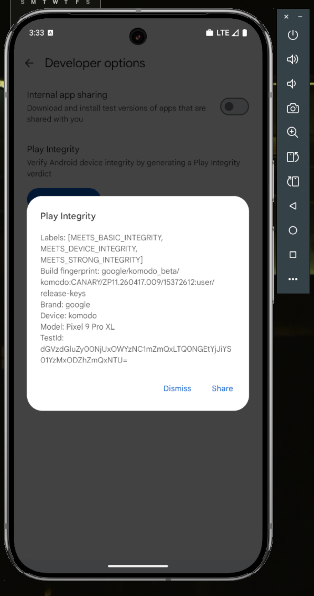

A rooted Android emulator that passes Play Integrity.
A reproducible recipe for a rooted Pixel-class AVD that returns a populated device-integrity verdict and presents as real Pixel 9 hardware to apps — custom kernel, attestation-chain forging, and full fingerprint suppression.

Three layers that must hold at once
The verdict is produced by DroidGuard inside com.google.android.gms.unstable. It fails if any layer leaks — a forged chain that doesn't validate, an emulator fingerprint in props or /proc, or a visible root module. This stack holds all three simultaneously.
Attestation forging
TEESimulator intercepts the keystore request and forges a hardware-attestation chain from your keybox — rooted in Google's attestation root, internally consistent.
Fingerprint suppression
Per-partition props, /vendor/build.prop bind mounts, and source-level kernel spoofs erase every emu64a / ranchu / goldfish tell from userspace.
Root invisibility
SUSFS hides the injected .so maps, KSU/SUSFS symbols, and module list — so gms.unstable can't see its own hooks in /proc/self/maps.
Five layers, end to end
Every layer is documented with the exact failure mode it prevents and the script that enforces it. The full reasoning lives in INTEGRITY_CHAIN.md.
A hardware-attestation chain that validates
TEESimulator forges the chain from keybox.xml in GENERATE mode — a fresh leaf key plus a complete chain signed by your keybox. The subtle trap: a service restart flips it to PATCH mode, which Google rejects.
No emulator fingerprint in identity props
keymint reads attestation IDs from per-partition props and the on-disk /vendor/build.prop. Bind-mounting a spoofed file over it is the piece that actually clears CANNOT_ATTEST_IDS.
/proc/* doesn't say "ranchu / goldfish"
The kernel filters /proc/modules and spoofs /proc/cpuinfo at the source level; on-device bind mounts and SUSFS open-redirects cover cpuinfo, version, cmdline, modules and the devicetree compatible string.
The root stack itself is invisible
SUSFS add_sus_map hides each injected .so; SELinux ALLOW rules let zygote dlopen ReZygisk; uname and KSU/SUSFS symbols are spoofed away.
Networking looks real
wlan0 is brought up by wrapping eth0 with the virt_wifi kernel module and joining the VirtWifi network — a device with no Wi-Fi interface is itself a weak emulator signal.
The two traps that waste days
If integrity "randomly" stops working, it is almost always one of these. The post-mortem in REPRODUCTION.md §7–9 is the part nobody else documents.
Never restart the attestation services
Restarting keymint / keystore2 / TEESimulator by hand feels right — but it flips TEESimulator from GENERATE into PATCH mode, producing a chain Google rejects. To apply any change, cold reboot. Recovery from a broken verdict is also just a cold reboot.
Never run autopif
It overwrites the pinned Pixel 9 (tokay) custom.pif.prop with a drifting profile — e.g. felix / Pixel Fold — whose fingerprint no longer matches the spoofed build ID, and the verdict fails.
From source to verdict
Source and scripts only — no prebuilt binaries or device images. Bring your own keybox.
# 1 · Build the kernel (Docker; ~10 GB, 5–25 min)
cd kernel-build && docker build -t kbuild . && \
docker run --rm -v "$PWD":/work -v kbuild-sources:/work/sources \
-w /work kbuild ./scripts/build-all.sh && cd ..
# 2 · Provide your keybox (gitignored — never commit a real one)
cp /path/to/your/keybox.xml device/data_adb/tricky_store/keybox.xml
# 3 · Boot the AVD with the custom kernel
./scripts/start_avd.sh
# 4 · Install the root modules (see device/modules.md), then:
./scripts/install-device-setup.sh
# 5 · Cold reboot once, then verify GENERATE mode + the verdict
./scripts/verify-integrity.sh --triggerout/Image.gzOn the keybox
The hardware-attestation chain is forged from device/data_adb/tricky_store/keybox.xml — which is .gitignored and not in this repo. A keybox committed to a public repo gets harvested and revoked by Google within hours. A TEE-class keybox reaches MEETS_DEVICE_INTEGRITY; MEETS_STRONG_INTEGRITY needs StrongBox and is unreachable on an emulator.
What's in, what's out
In scope
- Custom kernel with source-level anti-emulator patches
- Prop &
/procspoofing across all partitions - Attestation-chain forging + root hiding
-
virt_wifinetworking
Out of scope
- No APKs / no sensor-name spoofing (a known gap)
- No carrier / eSIM provisioning
- No prebuilt binaries or device images
- Strong integrity (needs StrongBox)
How it's laid out
Everything is source, scripts and docs — auditable end to end.
common-android15-6.6 with KSU-Next, SUSFS and the source spoofs.tokay / CANARY, pinned (no autopif).config.ini + advancedFeatures.ini templates (the critical Wi-Fi flags).start_avd.sh, install-device-setup.sh, and a read-only verify-integrity.sh health check.